アプリの特徴
RTL-SDR USBデバイス（USBドングル）を統合管理し、各ドングルのIQデータを複数クライアントへ配信します。
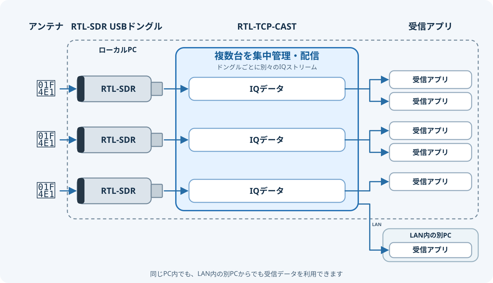
- 1台のドングルのIQストリームを複数の受信アプリへ配信
- 複数台のドングルをタブで管理し、受信範囲ごとに別のIQを配信
- LAN内のクライアントにも配信
- クライアント操作またはRTL-TCP-CASTから周波数などを集中管理
1台のRTL-SDRで受信したIQデータを、RTL TCP対応の複数アプリへ同時に配信します。
Gain、中心周波数、周波数補正（PPM）は、USBドングルを共有する全クライアントに共通です。 サンプルレートが2.4 MS/sの場合、理論上のIQ受信範囲は中心周波数の±1.2 MHzです（中心周波数が355 MHzなら353.8～356.2 MHz）。実際に利用できる範囲は、ドングルや受信条件によって狭くなることがあります。
例えば、SDR#で121.5 MHzと122 MHzを同時に聴取する場合、2本のUSBドングルが必要でしたが、同じ受信帯域に含まれるため、このアプリなら1本のUSBドングルでまかなえます。サンプルレートが2.4 MS/s、中心周波数が121.75 MHzの場合、理論上の受信範囲は120.55～122.95 MHzです。
一方、121.5 MHzと124 MHzは2.5 MHz離れているため、同じ受信帯域には収まりません。中心周波数をOK例と同じ121.75 MHzにすると、121.5 MHzは受信範囲内ですが、124 MHzは範囲外です。この場合は複数のUSBドングルで受信範囲を分ける必要があります。
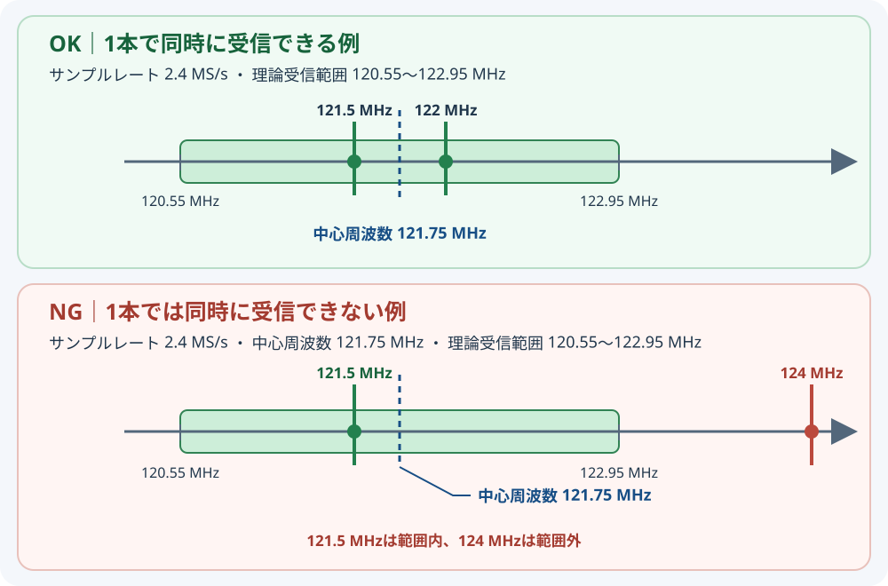
セットアップガイド
初回セットアップ
1. rtl_tcpを用意する
- PCで初めてRTL-SDRを使用する方は事前にUSBドングル用のWinUSBドライバーを導入します。
※ドライバー導入済みの場合は不要です。
RTL-SDR Quick Start Guide - RTL-SDR Blog Releasesを開き、Windows ReleaseのAssetsから
Release.zipをダウンロードします。 - ZIPを展開し、
x64フォルダーを任意の場所に置きます（例：C:\tools\rtl-sdr）。
2. USBドングルからIQを配信する
- GitHub Releasesの最新リリースを開き、Assetsから
RTL-TCP-Cast-win-x64.zipをダウンロードします。 - RTL-TCP-CASTの配布ZIPを展開して
RTL-TCP-Cast.exeを起動します。 - 「設定 → アプリ全体の設定…」で手順1-3で配置したフォルダ内にある
rtl_tcp.exeを指定します。 - 配信タブで「RTL-SDRデバイス」を選び、ドングルを選択します。一覧が空なら「更新」を押してください。
- 配信ポート（初期値
11234）を確認して「配信開始」を押します。「配信中」になったら受信アプリを接続します。
同じPCの受信アプリにはホスト127.0.0.1とRTL-TCP-CASTの配信ポートを指定します。標準ポートの場合は11234です。受信アプリはrtl_tcpの1234ではなく、RTL-TCP-CASTへ接続します。
そのほか
起動済みRTL-TCPを使う
「起動済みRTL-TCP」を選び、接続先とポートを入力します。同じPCの標準設定は127.0.0.1:1234です。受信アプリ用の配信ポートは別に指定して開始します。このモードではRTL-TCP-CASTは既存のrtl_tcpを停止しません。
LANへ配信する
開始前に「LANへ配信」を有効にします。受信PCには配信PCのLANアドレスとRTL-TCP-CASTの配信ポートを指定します。必要に応じてWindowsファイアウォールでプライベートネットワークの通信を許可してください。RTL TCPは認証・暗号化を行わないため、信頼できるLANで利用します。
チューニング操作を管理する
- クライアントの操作をすべて受け入れる：受信アプリの設定コマンドを転送します。最後に届いたコマンドが全クライアントに影響します。
- このアプリで集中管理（ロック）：クライアントの設定を止め、中心周波数・PPM・Gain・サンプルレートをこのアプリで設定します。
受信アプリの中心周波数とサンプルレートも合わせてください。
RTL-SDRのシリアルIDを変更する
- 「設定 → RTL-SDRシリアル番号変更…」を開き、対象のドングルを選びます。
- 新しいIDを入力して「保存」を押します。半角英数字・ハイフン・アンダースコアを使用でき、最大文字数は画面に表示されます。複数のドングルには異なるIDを設定すると識別しやすくなります。
- 変更前に、対象ドングルを使用中の他のソフトを終了してください。保存後はUSBを抜き差ししてデバイス一覧を更新します。
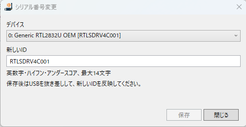
ヒント：SDR#をRTL-TCP-CASTへ接続する
- RTL-TCP-CASTで配信を開始し、タブのポート番号を確認します（初期値
11234）。 - SDR#のメニューから「Source → RTL-SDR TCP」を選びます。
- Hostに
127.0.0.1（SDRデバイスとRTL-TCP-CASTがあるPCでSDR#を動かす場合）、PortにRTL-TCP-CASTのポート番号、Sample RateにRTL-TCP-CASTと同じ値を設定し、SDR#で受信を開始します。
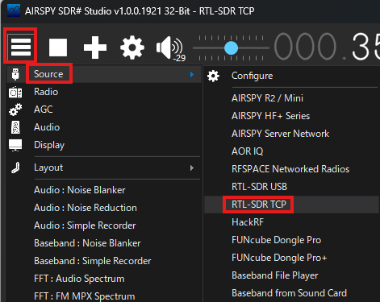
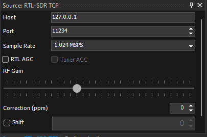
127.0.0.1、PortはRTL-TCP-CASTの配信ポートです。- SDR#でStartする前に、SDR#VFOの周波数をSDRデバイスの中心周波数に合わせてください。
- RTL-TCP-CASTで「クライアント操作ロック」を有効にし、SDR#のチューニング方式下記画像のようにを「Free tuning」にして、スペクトラムまたはウォーターフォール上の目的の周波数をクリックします。
- 配信中の受信帯域内で選局してください。帯域外の周波数は受信できません。
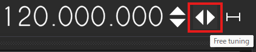
English guide
Features
RTL-TCP-CAST manages RTL-SDR devices in separate tabs and distributes each dongle's IQ data to multiple receiver clients.
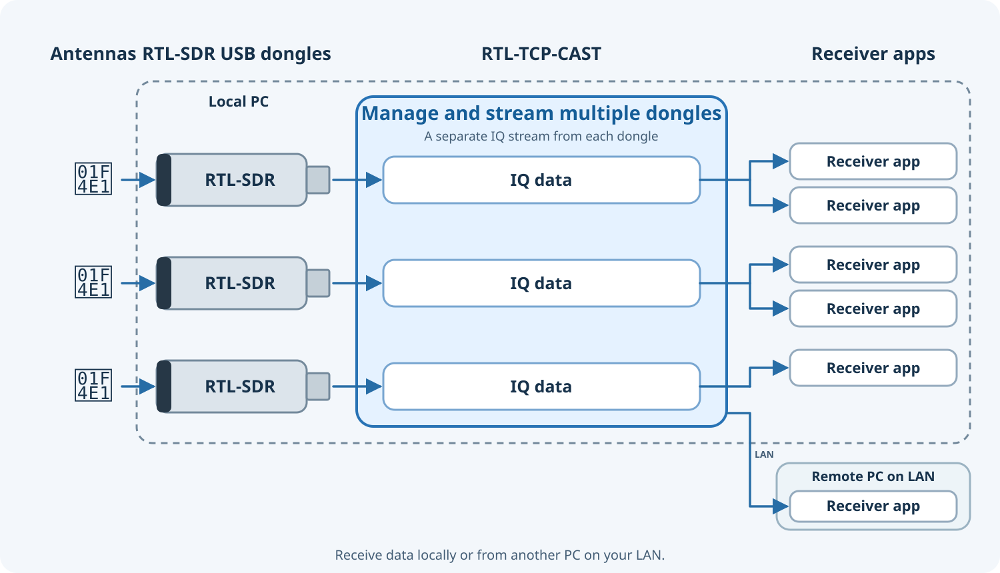
- Share one dongle's IQ stream with multiple receiver applications
- Manage multiple dongles in separate tabs, each with its own capture band
- Stream to clients on your local network
- Manage tuner settings centrally or allow client tuning commands
RTL-TCP-CAST distributes IQ data received by one RTL-SDR to multiple applications that support RTL TCP. Manage dongles in separate tabs.
Gain, center frequency, and frequency correction (PPM) are shared by all clients using the same RTL-SDR. At 2.4 MS/s, the theoretical IQ capture range is ±1.2 MHz around the center frequency (353.8–356.2 MHz when centered at 355 MHz). The usable range may be narrower depending on the dongle and reception conditions.
For example, listening to 121.5 MHz and 122 MHz simultaneously in SDR# used to require two USB dongles. Since both frequencies fit in the same capture band, RTL-TCP-CAST can serve both from one dongle. At 2.4 MS/s with a center frequency of 121.75 MHz, the theoretical capture range is 120.55–122.95 MHz.
By contrast, 121.5 MHz and 124 MHz are 2.5 MHz apart and cannot both fit in the same capture band. With the center frequency kept at 121.75 MHz, 121.5 MHz is in range but 124 MHz is out of range. Multiple dongles are needed to cover both frequencies at once.
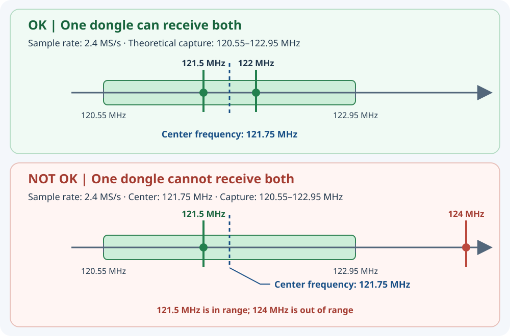
Setup guide
First-time setup
1. Get rtl_tcp
- Open RTL-SDR Blog Releases and download
Release.zipfrom a Windows Release's Assets. - Extract the ZIP and place its
x64folder somewhere convenient, for exampleC:\tools\rtl-sdr. Keep the DLLs next to the executables. - Install a WinUSB driver for your dongle.
2. Stream from a local dongle
- Open the latest GitHub Release and download
RTL-TCP-Cast-win-x64.zipfrom Assets. - Extract the RTL-TCP-CAST release ZIP and run
RTL-TCP-Cast.exe. - Open “Settings → Application settings” and select
rtl_tcp.exe. - In a session tab, select “RTL-SDR device” and choose your dongle. Press “Refresh” if needed. Device enumeration needs a 64-bit RTL-SDR DLL beside rtl_tcp.
- Set the distribution port (default
11234), then select “Start streaming”. Connect your receiver when the status shows streaming.
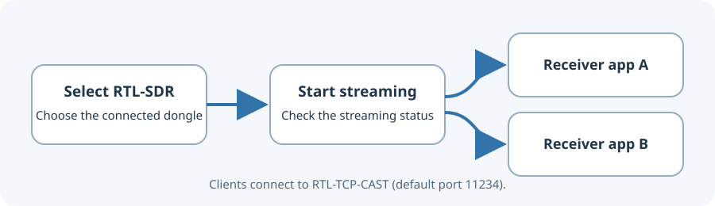
For a receiver on the same PC, use host 127.0.0.1 and RTL-TCP-CAST's distribution port (default 11234). Receivers connect to RTL-TCP-CAST, not rtl_tcp's upstream port 1234.
Other options
Use an existing RTL-TCP
Choose “Running RTL-TCP” and enter its host and port. The default local endpoint is 127.0.0.1:1234. Set a separate distribution port for receivers and start streaming. RTL-TCP-CAST will not stop the existing rtl_tcp process.
Stream over your LAN
Enable “Stream to LAN” before starting. Configure clients with the streaming PC's LAN address and RTL-TCP-CAST distribution port. Allow private-network traffic in Windows Firewall as needed. RTL TCP has no authentication or encryption; use it on a trusted LAN.
Manage tuning commands
- Accept commands from all clients: forward receiver commands. The latest command affects every client.
- Manage from this app (lock): block client tuning commands and set frequency, PPM, gain, and sample rate in this app.
Set receiver applications to the same center frequency and sample rate.
Change an RTL-SDR serial ID
Open “Settings → RTL-SDR Serial Number…”, select a dongle, enter a new ID, and select “Save”. Use letters, numbers, hyphens, or underscores; the maximum length is shown in the dialog. Assign distinct IDs to make multiple dongles easier to identify. Close other software using the dongle before changing its ID. After saving, unplug and reconnect the dongle, then refresh the device list.
Tip: Connect SDR# to RTL-TCP-CAST
- Start streaming in RTL-TCP-CAST and note the tab's port (default
11234). - In SDR#, select “Source → RTL-SDR TCP”.
- Set Host to
127.0.0.1when SDR# runs on the same PC as the RTL-SDR, set Port to the RTL-TCP-CAST tab's port, and choose the same Sample Rate as RTL-TCP-CAST. Then start SDR#.
To change SDR#'s listening frequency without retuning the RTL-SDR center, enable “Client Operation Lock” in RTL-TCP-CAST, choose “Free tuning” in SDR#, and select a signal in the displayed spectrum. This works only within the streamed capture bandwidth.
Example: monitoring 350–360 MHz
At a 2.4 MS/s sample rate, one capture spans about 2.4 MHz. With the center tuned to 355 MHz, the dongle captures approximately:
353.8 MHz ───────── [ center 355.0 MHz ] ───────── 356.2 MHz
Signals at, for example, 354.5 and 355.5 MHz are inside this captured slice. Whether multiple clients can process different signals in the slice depends on each receiver application's features and settings. If a client sends an RTL TCP command to change the dongle's center frequency, the captured slice moves for every client.
The full 350–360 MHz range cannot be captured at once. Its 10 MHz span is wider than the 2.4 MS/s capture bandwidth. Scan it by retuning sequentially, or use an SDR that can capture a wider bandwidth. The rtl-sdr API specification notes that sample loss is expected above 2.4 MS/s.
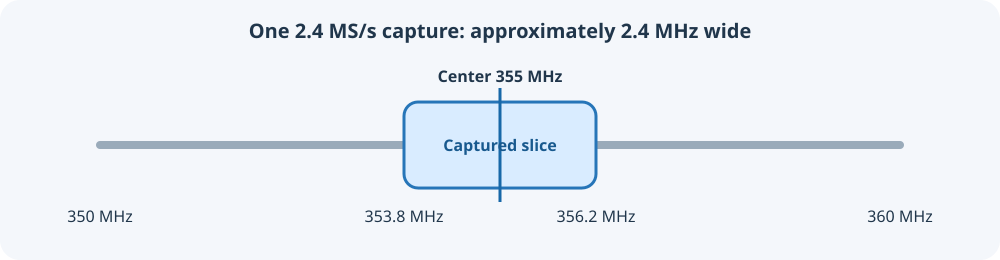
Multiple dongles: divide the range
For example, three dongles centered at 351, 355, and 359 MHz each capture about 2.4 MHz. Together they can cover portions of the 350–360 MHz range. RTL-TCP-CAST can manage and stream data from multiple dongles; connect a separate antenna to each one.
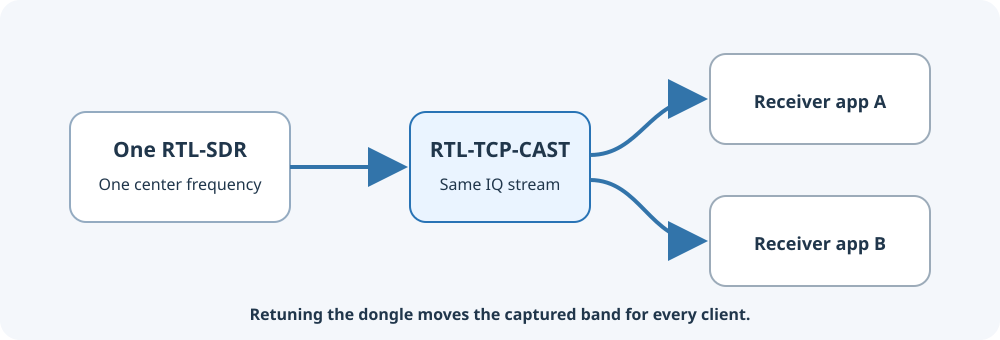
Troubleshooting
See the detailed user guide.
お問い合わせ / Contact
お問い合わせはXアカウント @AWS210_8492 までお寄せください。
For inquiries, contact @AWS210_8492 on X.
免責事項 / Disclaimer
本ソフトウェアは「現状有姿」で提供され、明示または黙示を問わず、商品性、特定目的への適合性、正確性、継続的な動作などを保証しません。利用および結果の確認は利用者の責任で行ってください。適用法令で認められる最大限の範囲において、作者および著作権者は、本ソフトウェアの使用または使用不能に起因する損害（データの消失、機器や他のソフトウェアへの損害、業務の中断、第三者との紛争などを含みます）について責任を負いません。ただし、適用法令により免責できない責任を除きます。利用者は、受信・録音・配信に関係する法令、機器や受信アプリの利用条件、および第三者ソフトウェアのライセンスを遵守してください。
This software is provided “as is”, without warranties of any kind, express or implied, including merchantability, fitness for a particular purpose, accuracy, or uninterrupted operation. You are responsible for evaluating and using it. To the maximum extent permitted by applicable law, the author and copyright holders will not be liable for damages arising from using, or being unable to use, this software, including loss of data, damage to equipment or other software, business interruption, or third-party claims, except where such liability cannot be excluded by law. Users are responsible for complying with applicable laws, terms governing their hardware and receiver applications, and third-party software licenses.